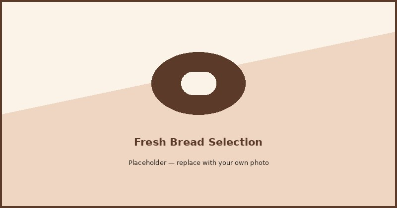

Our Products
What is in the case changes a bit from day to day, since we only bake what we can sell fresh and do not hold anything overnight. We do not have online ordering set up, so the prices below are more of a general range than a fixed menu. If you are shopping for something specific, especially a cake, it is worth reaching out through the contact page first so we can tell you what is realistic for the date you need.

Breads
The Signature Loaf is the one people ask for by name, but we also keep a whole wheat and a soft potato roll on hand most days, the potato roll especially goes fast with sandwich shops nearby. Depending on the season we will bake something extra, rosemary olive oil in the fall, cinnamon raisin swirl closer to the holidays. Bread runs somewhere between four and nine dollars, depending mostly on size.
Pastries
Croissants come out of the oven first thing, and they are laminated over a few days rather than rushed, which is the only reason they hold that flaky layered texture. We also do fruit danishes, scones, muffins, and cinnamon rolls, the last one being a favorite for anyone stopping in before work. Most pastries run three to six dollars each, and we can box up an assortment if you are picking up for an office or a group.
Cakes
We build custom cakes for birthdays, anniversaries, whatever the occasion calls for, and we also keep a small rotation of ready made cakes available by the slice for anyone who did not plan that far ahead. Flavors stick to the basics, vanilla and chocolate, plus a fruit cake that changes with what is in season. Custom orders need at least forty eight hours notice. Pricing starts around twenty five dollars for a ready made cake and climbs from there depending on size and design for a full custom order.
Your Pre-Order List
Add items above to start building a pre-order list. When you are ready, head to the Contact page and your picks will already be waiting in the request form.
Your pre-order list is empty. Add an item above to get started.
Continue to Contact Form